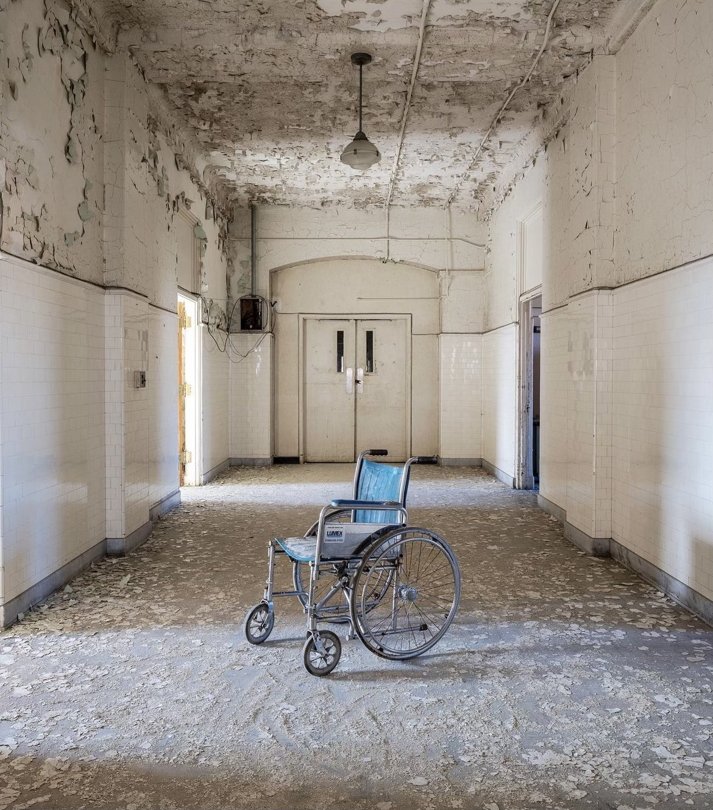
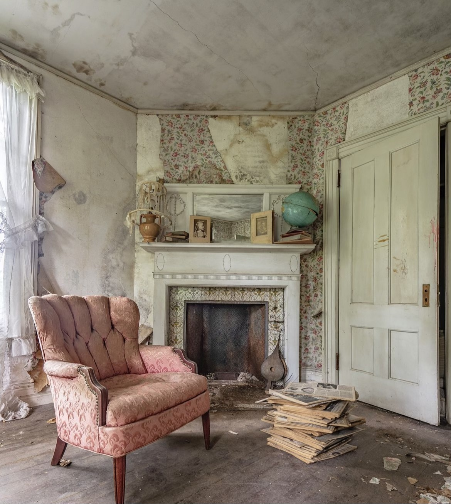
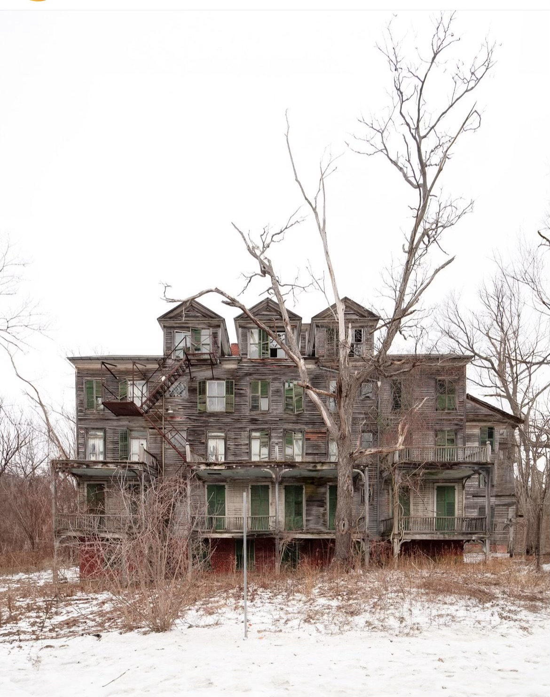

URBEXING
Urban Exploration is a hobby, which has become more popular in recent years. In essence, this involves visiting interesting buildings and locations typically off-the-beaten-track. For most explorers (often called Urban Explorers), these are places that are abandoned and/or places that are off-limits and unseen by the general public.
Urban Exploration and photography often go hand-in-hand. It is common for explorers to document their explorations with reports and a large collection of photos. The locations may have interesting architecture, like an old Art Nouveau casino or an Edwardian theatre. Perhaps there are ties to important historic events, which can be shared alongside the images. Alternatively, some natural decay can create some gloriously photogenic scenes.
Urban Exploration often grades into several other hobbies, including roof topping or urban spelunking. Correspondingly each explorer often has a slightly different definition and specific areas of interest. The choice of location, as well as the photography, often reflects something about the personality explorer/photographer.
Most urban explorers follow several “unwritten rules” of exploring. The first of those being take nothing but photos. Explorers don’t condone theft, and you should leave it as you found it.
The second rule is to not share locations. Most urban explorers put a lot of time and work into finding locations, and researching the history of it. It’s often frowned upon to instantly ask “where is this?”. Explorers will sometimes share locations within their close circle. Another reason for not sharing locations is that it puts that location at risk for vandals, scrappers, graffiti/taggers, etc.